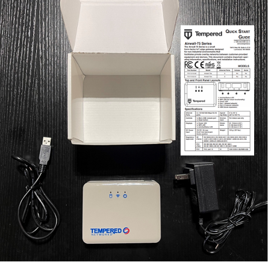
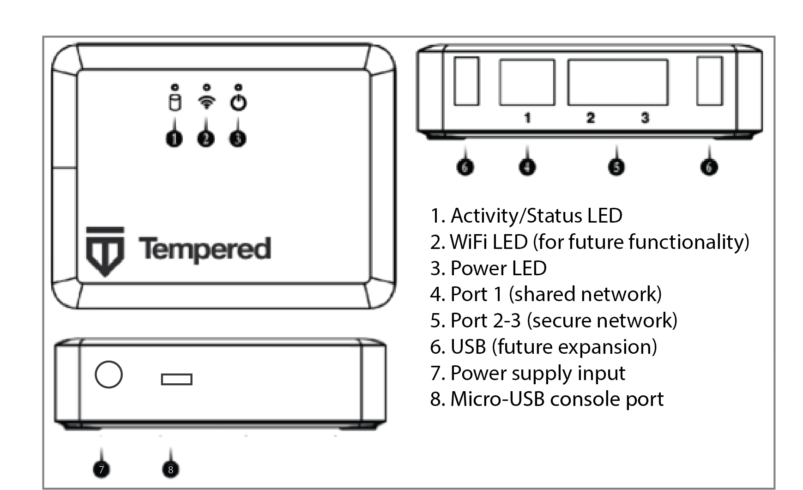
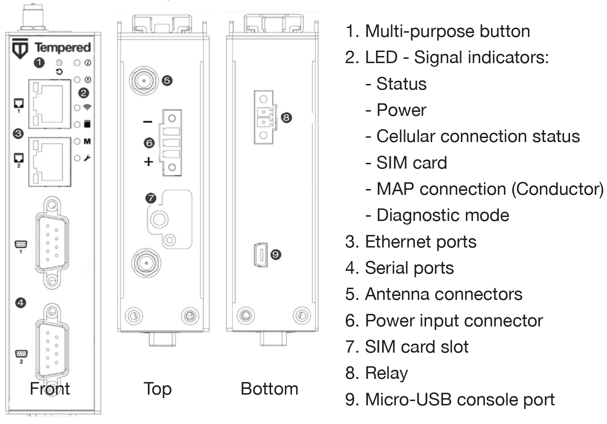
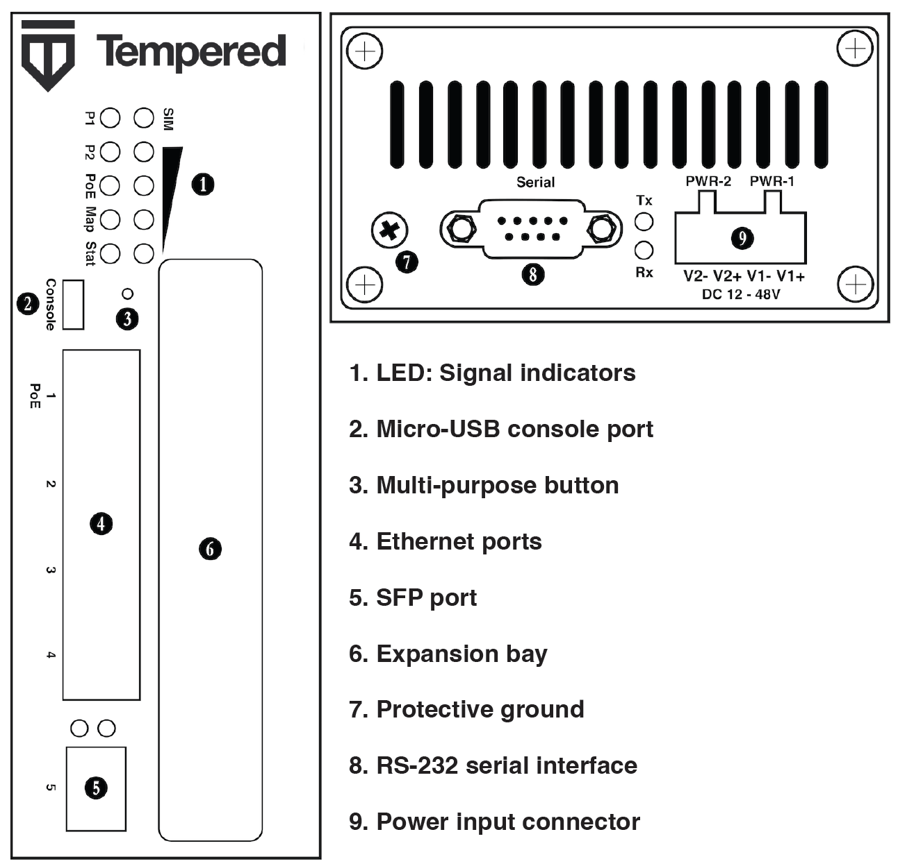
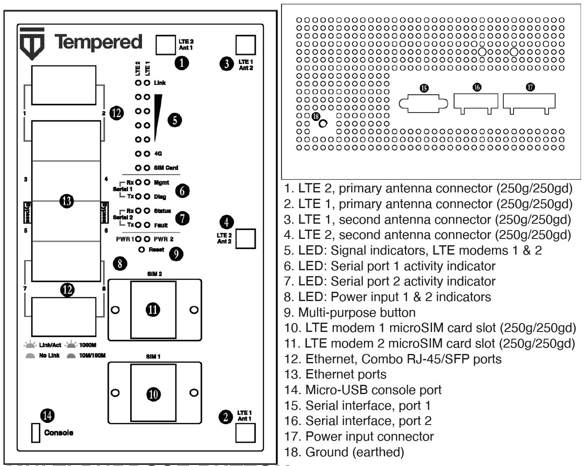

Airwall Gateway Hardware Installation Guide
This is a generic installation guide for all Airwall Gateway hardware appliances (75, 110, 150, 250, and 500 Airwall Gateways). For more specific installation instructions, specifications, and panel layouts for your specific model, download the platform guide for your model from Documentation Downloads.
Follow this guide to set up basic network connectivity for an Airwall Gateway, and provision the gateway on the Airwall Conductor. The Conductor is the central configuration and management point for your Airwall secure network, and manages trust between devices and Airwall Gateways on your network. These instructions are based on Airwall Gateways and Conductor v2.2.8 and later.
Here are the basic steps, explained in more detail below:
- Unbox the Airwall Gateway and get familiar with the parts.
- Connect the Airwall Gateway to your network and to the Conductor.
- Manage the Airwall Gateway in the Conductor.
Before you begin
To bring the Airwall Gateway online, you need:
- the Conductor IP address or URL that the Airwall Gateway connects to
- network cables to connect the Airwall Gateway to your network, or a valid SIM card if you are only connecting via a cellular network
- a micro-USB cable to connect a computer to the Airwall GatewayNote: If your Airwall Gateway model does not have a micro-USB console port, use a network cable to connect to your computer's ethernet port. If your computer does not have ethernet port, use a RJ45-to-USB cable.
Step 1: Unbox the Airwall Gateway
Unbox the Airwall Gateway and become familiar with the parts.
-
Open the box and carefully remove the Airwall Gateway.
This picture shows an Airwall Gateway 75.
-
Check out the platform guide/quick start guide that came with your Airwall Gateway to get familiar with the top and front panel of the Airwall Gateway.
Here are the panel layouts for the most common Airwall Gateways:
- 75 – 
- 110 – 
- 150 – 
- 250 – 
- 500 –

- 75 –
- Check the specifications on the labels and platform guide included in the box to determine environments to which you can physically deploy the Airwall Gateway. Download the panel layouts and basic specifications for your Airwall Gateway from Documentation Downloads.
Step 2: Connect the Airwall Gateway to the network and the Conductor
Connect the Airwall Gateway to your network.
- Console port – Best option for Airwall Gateway series with a console port.
- Diagnostic mode – Best option for Airwall Gateway series without a console port.
- Use a DHCP server – Advanced option for adding a large number of Airwall Gateways, see Connecting Airwall Gateways using a DHCP server.
Console port connect
- Plug in the Airwall – Locate the Airwall Gateway in an area that complies with the safe operating guidelines, and then plug it in with the supplied power cord.
- Connect to your network – Connect the Airwall Gateway to a network that has access to the Conductor (your company network or the Internet) using Port 1.
-
Connect a computer to the Airwall Gateway – Connect your computer to the micro-USB console port on the Airwall Gateway.
- Connect to devices – Connect the devices you want to protect to the Airwall Gateway on Port 2. See the platform guide that came with your Airwall Gateway for the location of Port 2 and above.
Diagnostic mode connect
- Plugin the Airwall – Locate the Airwall Gateway in an area that complies with the safe operating guidelines, and then plug it in with the supplied power cord.
- Connect to your network – Connect the Airwall Gateway to a network that has network reachability to the Conductor (your company network or the Internet) using Port 1.
-
Connect a computer to the Airwall Gateway – Connect your computer to
Port 2 with an ethernet cable.
- For Airwall Gateway series with a Multi-Purpose or Reset button, press the button for 3 seconds to enter Diagnostic Mode. After three seconds, the status LED blinks to indicate the Airwall Gateway is in Diagnostic Mode.
- For Airwall Gateway series without a Multi-Purpose or Reset button,
place into Diagnostic Mode by connecting a VGA monitor and a USB
keyboard to port 2 of the Airwall Gateway, and enter the login prompt:
- 2.2.3 and later: Enter
airshto enter the console, and then enterdiag.Note: If you are asked for a password, enter default airsh, or the password you set. - Earlier than 2.2.3: Enter
diag, then enter passworddiag.
- 2.2.3 and later: Enter
Once the Airwall Gateway is in diagnostic mode, Overlay network communications from the Airwall Gateway are disabled and the device network is reconfigured with a static IP address.
- Connect to devices - Connect the devices you want to protect to the Airwall Gateway on port 2 and above.
Step 3: License and Manage the Airwall Gateway in the Conductor
You need to Add Airwall Edge Service Licenses to the Conductor before you can provision and license Airwall Gateways. Airwall Edge Services include Airwall Gateways as well as Airwall Agents and Servers that allow people to connect their devices to your Airwall secure network.
To complete this step, a Conductor administrator must license and manage the Airwall Gateways. For instructions, see Provision and License Airwall Edge Services.
Once complete, Conductor administrators can configure the Airwall Gateways in the Conductor.